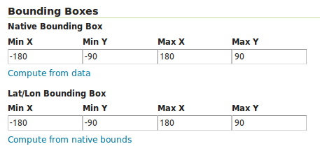
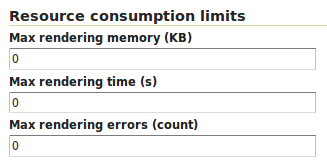

10. GeoServer Plugins¶
A straightforward way to render, manipulate, and manage data stored in GeoMesa data stores is to use GeoServer, an open source server for sharing geospatial data. This chapter describes how to work with the GeoMesa GeoServer plugins.
10.1. GeoServer Versions¶
Not all versions of GeoServer are compatible with all versions of GeoMesa. Refer to the chart below for which version to install. It is recommended to use the latest GeoServer bug-fix release for the compatible minor version, although this may occasionally cause errors as GeoServer does not follow semantic versioning.
Note
New versions of GeoServer are released regularly. GeoMesa may work with newer versions of GeoServer, but only the versions listed below have been verified.
GeoMesa Version |
GeoServer Version |
|---|---|
5.1.0 |
2.26.0 |
5.0.0 |
2.24.2 |
4.0.0 |
2.22.2 |
3.1.1 to 3.5.x |
2.17.3 |
3.0.x to 3.1.0 |
2.17.0 |
2.4.x |
2.15.x |
2.2.x to 2.3.x |
2.14.x |
2.1.x and earlier |
2.12.x |
Warning
GeoMesa will not work with an incompatible version of GeoServer. Ensure that your install the correct version according to the chart above.
10.2. Installation¶
Instructions for installing the GeoMesa plugins in GeoServer are available by datastore:
Go to your GeoServer installation at http://<hostname>:8080/geoserver.
For new installations of GeoServer, the default username is admin and
password is geoserver. These should be changed to prevent unauthorized access.
10.3. Creating a Data Store¶
Specific instructions by data store:
10.4. Publish a GeoMesa Layer¶
After a GeoMesa data store is successfully created, GeoServer will present a list of feature types registered in that data store. Click “Publish” next to the name of a feature type to create a layer of the data in GeoMesa of that type.
You will be taken to the Edit Layer screen. To render your layer, you must first set values for the bounding boxes in the “Data” pane. In many cases, you can click on the “Compute from native bounds” link to compute these values from the data.
Click on the “Save” button when you are done.
Warning
When configuring a time-enabled layer, generally you should set the presentation to “Continuous interval.”
Setting presentation to “List” will require displaying all unique time values in the layer, and cause WMS
GetCapabilities requests to be slow.
10.5. Preview a Layer¶
Click on the “Layer Preview” link in the left-hand menu. Once you see your layer, click on the “OpenLayers” link, which will open a new tab. If you have ingested data into GeoMesa, it will be displayed here.
If the data you have ingested is a set of latitude/longitude points, click on one of the points in the display (rendered by default as red squares), and GeoServer will report detailed records stored in the GeoMesa store in the region underneath the map area.
Click on the “Toggle options toolbar” icon in the upper-left corner of the preview window. The right-hand side of the screen will include a “Filter” text box. Enter a search query on the attributes of the feature type of the data you have ingested, and press on the “play” icon. The display will now show only those points matching your filter criterion.
This is a CQL filter, which can be constructed in various ways to query data. You can find more information about CQL from GeoServer’s CQL tutorial.
Note
If you enabled the time dimension for a layer, such as instructed in the GeoMesa Accumulo Quick Start,
then you will need to specify a TIME parameter in the URL of the form:
&TIME=2014-01-01T00:00:00.000Z/2014-01-31T23:59:59.999Z
That tells GeoServer to display the records for the entire month of January 2014. GeoServer will add an implicit
time filter if you do not specify one, which may cause unexpected results. This TIME parameter is distinct from the
CQL_FILTER parameter and specifying a CQL time filter without the TIME parameter may create an empty intersection
with the implicit time filter. You can find more information about the TIME parameter from GeoServer’s documentation.
10.6. Analysis with WPS¶
As described by the Open Geospatial Consortium’s Web Map Service page,
The OpenGIS® Web Map Service Interface Standard (WMS) provides a simple HTTP interface for requesting geo-registered map images from one or more distributed geospatial databases. A WMS request defines the geographic layer(s) and area of interest to be processed. The response to the request is one or more geo-registered map images (returned as JPEG, PNG, etc) that can be displayed in a browser application. The interface also supports the ability to specify whether the returned images should be transparent so that layers from multiple servers can be combined or not.
A tool like GeoServer (once its WPS plugin has been installed) uses WPS to retrieve data from GeoMesa. WPS processes can be chained, letting you use additional WPS requests to build on the results of earlier ones.
10.7. Configuration¶
10.7.1. WMS Plugin¶
Depending on your hardware, it may be important to set the limits for your WMS plugin to be higher or disable them completely by clicking “WMS” under “Services” on the left side of the admin page of GeoServer. Check with your server administrator to determine the correct settings. For massive queries, the standard 60 second timeout may be too short.

10.7.2. Temp Directories¶
GeoServer creates temporary directories for caching various files. Running in a multi-tenant environment can result in permission errors when different users try to write to the same directories. To avoid this, configure your application server with the following system properties:
-DEPSG-HSQL.directory=/tmp/$USER-hsql
-DGEOWEBCACHE_CACHE_DIR=/tmp/$USER-gwc
10.7.3. Logging Explain Query Planning¶
GeoMesa data stores can show their plan for executing queries,
as described in Explaining Query Plans. To enable the logging of explain query
planning in GeoServer, add the following to the
$GEOSERVER_DATA_DIR/logs/DEFAULT_LOGGING.xml file:
<Logger name="org.locationtech.geomesa.index.utils.Explainer" level="trace">
<AppenderRef ref="stdout"/>
<AppenderRef ref="geoserverlogfile"/>
</Logger>
If you are not sure of the location of your GeoServer data directory, it is printed out when you start GeoServer:
--------------------------------------------------------------------
CONFIG [org.geoserver] - Loading catalog /path/to/geoserver-data-dir
--------------------------------------------------------------------
It may also be helpful to refer to GeoServer’s Advanced log configuration documentation for the specifics of how and where to manage the GeoServer logs.
10.7.4. Auditing GeoMesa DataStores¶
GeoMesa data stores can audit query metrics. To enabled auditing, check the box for geomesa.query.audit
when registering the data store in GeoServer.
GeoMesa data stores will generally write audited queries to log files. To configure an audit log, set the level for
org.locationtech.geomesa.index.audit to DEBUG. This can be accomplished by editing the GeoServer logging
configuration (e.g. $GEOSERVER_DATA_DIR/logs/DEFAULT_LOGGING.xml):
<Logger name="org.locationtech.geomesa.index.audit" level="debug" additivity="false">
<AppenderRef ref="auditLogFile"/> <!-- note: requires an appender to be defined with this name -->
</Logger>
The Accumulo data store will also write audited queries to the <catalog>_queries table.
See Query Auditing for details on query attribution.
10.8. GeoMesa GeoServer Extensions¶
Due to licensing, GeoServer-specific code related to GeoMesa is maintained in a separate repository. It can be downloaded from Maven central, or built from source.
It is required for Arrow output in GeoServer, among other things.
Once obtained, the GeoServer modules can be installed by copying geomesa-gs-*.jar into
the GeoServer lib directory.